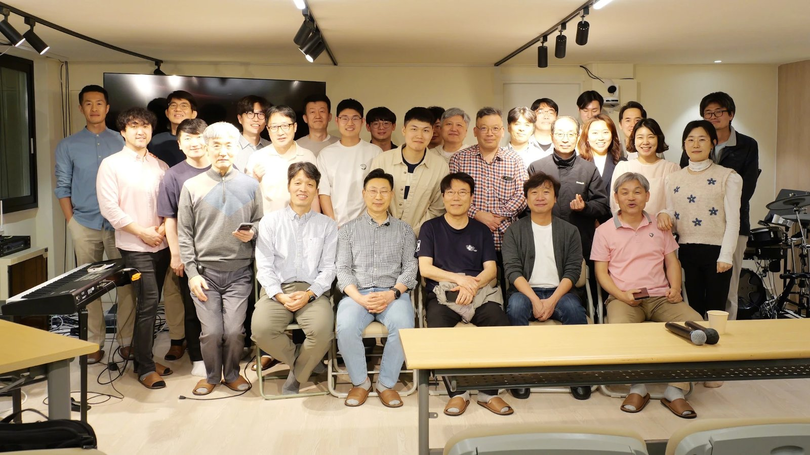
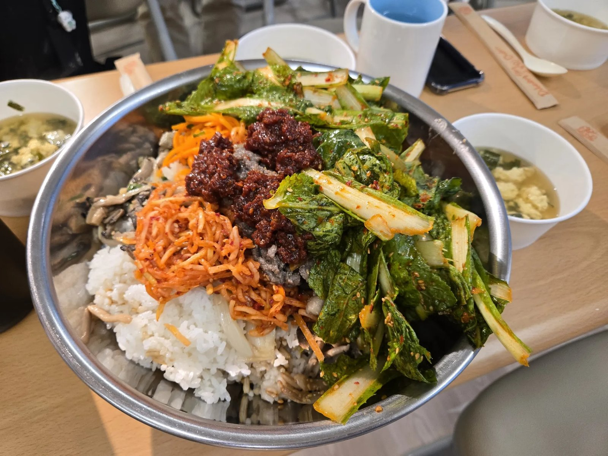
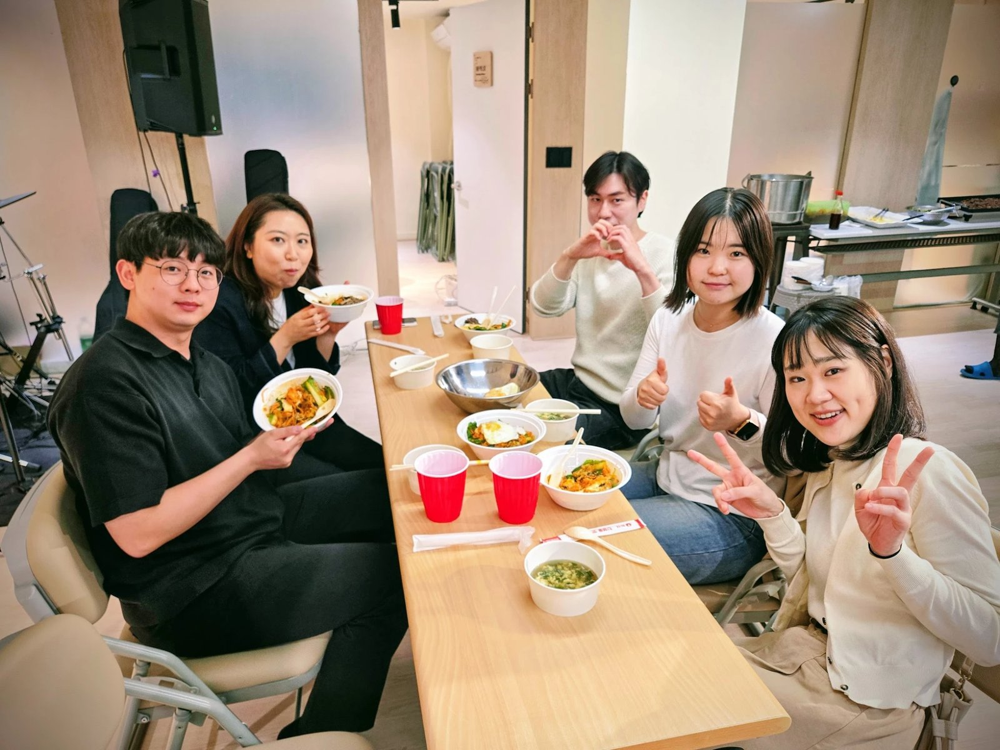
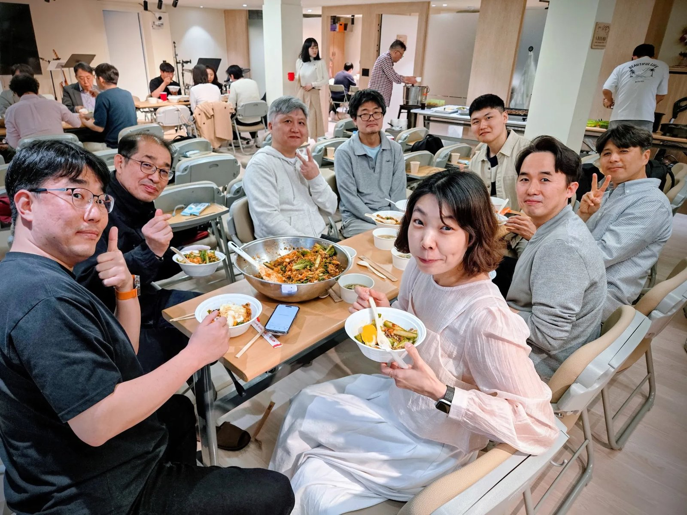
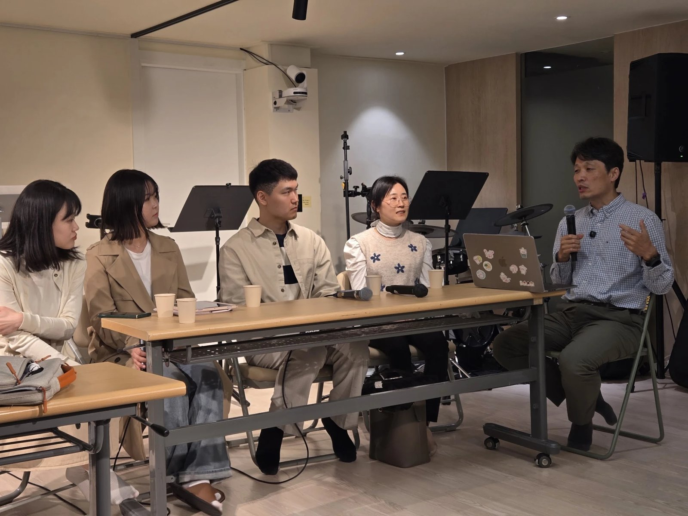

유퀴즈 진행자가 기억하는 4월 18일
글 · 이상협 (한국누가회 학사학원사역부 이사 · 협력팀장)
지난 4월 18일 토요일 오후, 서울 누가의 집에 사람들이 모였다. 한국누가회(KCMF) 학사학원사역부가 마련한 「학사학원사역 미래방향 정책 간담회」 — 오후 네 시의 예배로 시작해 밤 아홉 시 반의 이사회로 끝난 긴 하루였고, 현장에 오지 못한 이들을 위해 유튜브와 줌으로도 중계되었다. 나는 그날 두 개의 모자를 쓰고 있었다. 하나는 행사를 기획한 협력팀장의 모자, 다른 하나는 저녁 순서 「유퀴즈 온 더 CMF」 진행자의 모자였다. 무대 위에서 마이크를 잡고 있었지만, 돌아보면 그날 내내 나는 말하는 사람이 아니라 듣는 사람이었다.

학사학원사역이라는 말이 낯선 독자를 위해 한 줄을 보태 둔다. 캠퍼스의 의·치·간호대 학생들을 돌보는 학원사역과, 졸업 이후 의료 현장으로 흩어진 누가들을 잇는 학사사역을 함께 다루는 영역이다. 학생 때 뜨거웠던 신앙과 공동체가 졸업과 수련의 터널을 지나며 왜 끊어지는가, 그 끊어진 자리를 누가 어떻게 이어야 하는가 — 이 오래된 물음이 그날 하루의 주제였다.
넉 달이 지났다. 무대의 열기가 가라앉은 책상에서, 그날 우리가 무엇을 들었고 무엇을 숙제로 받았는지 이제야 정리해 본다.
왜 봄동비빔밥이었나
저녁 여섯 시, 조별 모임과 함께 차려진 밥은 봄동비빔밥이었다. 메뉴를 고르며 생각한 것은 한 가지였다 — 협력. 의사·치과의사·한의사·간호사, 그리고 간사. 학생과 주니어와 시니어. CMF를 이루는 구성원이 저마다 다른 나물처럼 한 그릇에 담겨 비벼질 때 비로소 하나의 맛이 난다는 것, 그것이 이 간담회가 말하고 싶은 전부였다. 각자도생의 반대말은 거창한 조직이 아니라 함께 비벼 먹는 밥상이라고 나는 믿었다. 그 밥상에서 낮 동안 서먹했던 간사와 이사와 학사들이 숟가락을 부딪히며 말문을 텄다. 훗날 이 간담회를 정리하며 얻은 열쇳말이 「저부담 고연결」 — 참여의 부담은 낮추되 연결되어 있음은 확실히 느끼게 하자 — 였는데, 그 말을 그날 가장 먼저 몸으로 보여 준 것은 어느 발제도 아닌 비빔밥이었다고 나는 생각한다.
그 밥을 준비해 주신 분은 장현준 간사대표의 사모님이었다. 오십여 명 분의 저녁을 정성으로 차려 주신 그 수고가 없었다면 그날의 하모니는 시작되지 못했을 것이다. 지면을 빌려 늦은 감사를 드린다.



외부 손님의 거울
신동혁 대표의 인도로 예배를 드린 뒤, 첫 발제는 일부러 외부 손님께 맡겼다. 신승철 IVF 대표간사는 남의 단체 앞에서 자기 단체의 지난 20년 하락을 해부하는, 쉽지 않은 발제를 기꺼이 맡아 주었다. 요지는 이랬다. 단체가 어려워지면 우리는 그 원인을 사람에게서 찾고 싶어진다 — 요즘 간사들이 이래서, 그 캠퍼스가 저래서. 그러나 20년의 추세가 개인의 문제일 수는 없으며, 개인 탓으로 읽는 동안 반등의 시기를 놓친다는 것이다. 그날 필기장에 눌러 적은 문장이 있다.
"캠퍼스 사역은 흐르는 물과 같다. 발버둥 치지 않으면 사라진다."
4년이면 구성원 전원이 졸업으로 빠져나가는 사역은, 내버려 두는 순간 떠내려간다. 나는 그 옆 여백에 "딱 우리 얘기다"라고 적었다. 강한 전문직 졸업생 그룹이 후원과 의사결정을 함께 쥐고 있는 우리 단체에게, 졸업생의 담론이 캠퍼스를 덮기 시작할 때 무슨 일이 벌어지는가에 대한 이웃 단체의 증언은 정확한 거울이었다. 거울이란 원래 남의 얼굴이 아니라 제 얼굴을 비추라고 있는 물건이다.
안에서 본 우리
이어서 장현준 간사대표가 CMF 학원사역의 현재를 보고했다. 숫자가 많이 나온 발제였지만 핵심은 숫자를 믿지도 무시하지도 말자는 태도였다. 줄면 조바심이 되고 늘면 자만이 되는 것이 숫자인데, 지금의 회복세 앞에서 그는 우리가 잘하고 있느냐고 스스로 묻고 그 답을 하나님께 돌렸다. Z세대는 교회에 무관심해서 떠난 세대가 아니라 신뢰할 수 없어 거리를 둔 세대라는 진단, 그러므로 필요한 것은 프로그램의 증설이 아니라 진정성과 안전한 질문의 공간과 실제적 돌봄이라는 처방이 이어졌다. 신입생 모임, 예비 누가 모임, 병원 모임, 학생과 학사 사이를 잇는 징검다리 트랙 — 인생의 전환점마다 다리를 하나씩 놓는 연결고리 사역의 보고도 이어졌다. 그리고 간사와 누가의 동역은 이제 할 것인가 말 것인가의 질문이 아니라 기도하며 추구할 방향이라고 선언하며, 자발적 사역이 실제로 굴러가려면 최소한의 예산과 구조가 받쳐 주어야 한다는 요청을 정직하게 붙였다.
물음표에서 느낌표로
밥상을 물린 저녁 세션, 세 번째 발제가 이 간담회의 심장이었다고 나는 생각한다. 지역 현장에서 사역하는 이수진 간사는 「물음표와 느낌표 사이」라는 제목으로 학사사역에 세 개의 물음표를 던졌다. 우리는 정말 환영하고 있는가(의지). 학사를 위한 조직이 있는가(조직). 우리가 기대하는 학사의 모습은 무엇인가(사명). 신입 누가 환영회에 손에 꼽을 인원만 앉아 있는 풍경은 어느 한 지역의 실패담이 아니었다. 떠날 사람들이라는 전제가 돌봄의 의지를 갉아먹고, 옅어진 돌봄이 다시 이탈을 앞당기는 악순환 — 환영의 구조가 없는 곳이라면 어디서든 반복될, 우리 모두의 이야기였다. 졸업생을 밥값과 수련회비를 보내 주는 재정 후원자로만 남겨 둘 것인가라는 물음도 오래 아팠다.
해법으로 그가 내놓은 것은 역설이었다. 학사사역이 잘 되려면 학원사역이 잘 되어야 한다는 것 — 학생을 사역의 수혜자로만 몇 년씩 머물게 하지 말고, 방향을 함께 숙의하는 참여자로 세우자는 것이었다. 소액 정기 후원도 액수의 문제가 아니라 정체성과 책임의 훈련이니 학생 때부터 몸에 배게 하자고 했다.
느낌표는 거창한 데서 오지 않았다. 그가 「급진거북이」라 이름 붙인 전략 — 목적은 과감하게, 실행은 사부작사부작 — 의 실물은, 한 병원에서 매주 저녁 함께 밥 먹고 말씀 읽고 기도제목을 나누는 작은 모임 하나였다. 그리고 그 모임에 나온 한 간호사 누가의 말이 회의장의 숨을 잠시 멈추게 했다.
"퇴사를 생각할 만큼 너무 힘들었는데… 이 병원 모임이 정말 오아시스 같아요."
정책 문서 백 장이 하지 못하는 증명을 밥상 하나가 하고 있었다.
무대 위에서 들은 것
저녁의 유퀴즈 무대에는 20대부터 50대까지 학사 여섯 분이 게스트로 앉았다. 사전 서면 답변과 무대의 대화를 관통한 것은, 세대는 달라도 가리키는 구조는 같다는 사실이었다. 보호받던 학생 시절과 임상 현장 사이의 낙차. 졸업하는 순간 '먼저 찾아오는 돌봄'이 끊기고 소속을 유지하는 비용이 오롯이 개인에게 넘어오는 구조. 수련의 터널을 지나는 동안 아는 얼굴이 다 사라져 돌아올 문을 찾지 못하는 진입장벽. 그리고 학사학원사역이 무엇을 하는지 정작 회원들에게 알려지지 않고 있다는 뼈아픈 지적까지. 조별 밥상의 기록도 같은 방향을 가리켰다. 감사의 이유는 예외 없이 사람이었고 — 선배의 사랑, 간사의 돌봄 — 요구의 방향은 예외 없이 구조였다. 연락망, 모임의 형태, 재정, 소통.

세 갈래의 필요, 그리고 한 문장
패널토의를 지나 밤이 깊을 무렵, 우리는 이 모든 목소리를 세 갈래의 필요로 함께 정리했다. 첫째, 흩어진 소통을 하나로 모으고 소액 정기 후원으로 참여의 습관을 만드는 디지털 구독 플랫폼이 필요하다. 둘째, 익명으로도 두드릴 수 있는 멘탈 헬스·위기 상담과 멘토링의 연결망이 필요하다. 셋째, 과별·직능별 작은 모임들이 부담 없이 생겨나도록 돕는 마이크로 모임 활성화와 가이드라인이 필요하다. 어느 것도 새 조직을 세우자는 말이 아니었다. 사람이 만들어 온 은혜를 구조가 이어받게 하자는 것이었다. 그리고 이상일 이사장과 함께 선 마무리 자리에서 우리는 이렇게 소망을 모았다.
"각자도생의 차가운 현장에서, 생명을 살리는 유기적 공동체로 다시 함께 지어져 갑시다."
넉 달 뒤의 숙제
고백하자면 이 글을 이렇게 늦게 쓰는 이유가 있다. 간담회는 선언이 아니라 시작이었고, 시작은 이어 가는 손이 있어야 완성되기 때문이다. 세 갈래의 필요는 아직 문서 속의 문장이다. 그것이 실제의 소통 채널이 되고, 상담의 창구가 되고, 어느 병원의 저녁 밥상이 되는 일은 특정 부서의 과업이기 이전에 우리 모두의 숙제로 남아 있다. 세 갈래의 필요를 어떻게 구체화하고 실행할지는 협력팀과 학사학원사역부 이사회가 이어서 다듬어 갈 것이다. 그 논의를 기다리기보다 내 몫부터 시작하는 것 — 기획자였던 내게 남은 첫 번째 숙제다.
그날 배운 것을 한 줄로 줄이면 이렇다. 공동체는 흐르는 물 위에 있다 — 발버둥 치지 않으면 떠내려간다. 그러나 그 발버둥이 꼭 거창할 필요는 없다. 봄동비빔밥 한 그릇, 매주 한 번의 밥상, 후배에게 먼저 거는 안부 전화 한 통. 각자도생의 현장 어딘가에 오아시스를 파는 일은 결국 사부작사부작 먼저 시작하는 사람의 몫이다. 당신의 자리에서, 그 첫 삽은 무엇이겠는가.